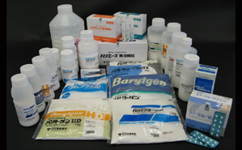
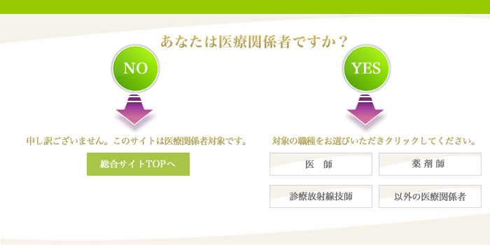
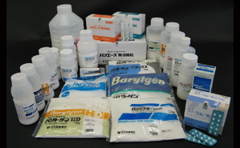
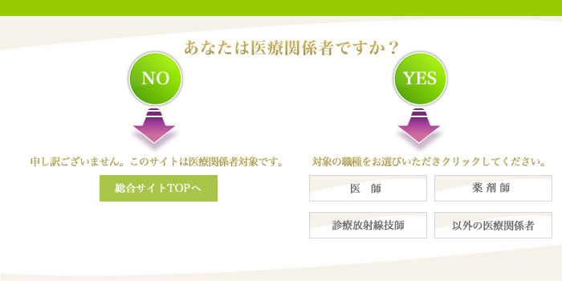

医薬品
このサイトをご利用いただくための注意事項です。 必ずお読みください。
一般の方および国外の医療関係者に対する情報提供を目的としたものではありませんので、ご了承ください。 |
|  |
関連商品
医薬品関連リンク集
行政機関
健康に関する情報
その他
 |
| 発売元 | |||||||||||||||||||||||||||
|---|---|---|---|---|---|---|---|---|---|---|---|---|---|---|---|---|---|---|---|---|---|---|---|---|---|---|---|
|
|||||||||||||||||||||||||||
このサイトをご利用いただくための注意事項です。 必ずお読みください。
一般の方および国外の医療関係者に対する情報提供を目的としたものではありませんので、ご了承ください。 |
|  |
|
| 発売元 | |||||||||||||||||||||||||||
|---|---|---|---|---|---|---|---|---|---|---|---|---|---|---|---|---|---|---|---|---|---|---|---|---|---|---|---|
|
|||||||||||||||||||||||||||